AI 2026 · Part 3, Agents

Let’s say we have intelligence too cheap to meter. In 2040, 100 GW of compute powering 100M H100e chips. That’s a lot of brainpower! About 100M human-equivalents. But very spiky. Savants at anything mathematical and digital. Idiots at anything social.
What can this intelligence do? Let’s look at coding, white-collar labor, and blue-collar labor.
Coding
Where AI found product-market fit
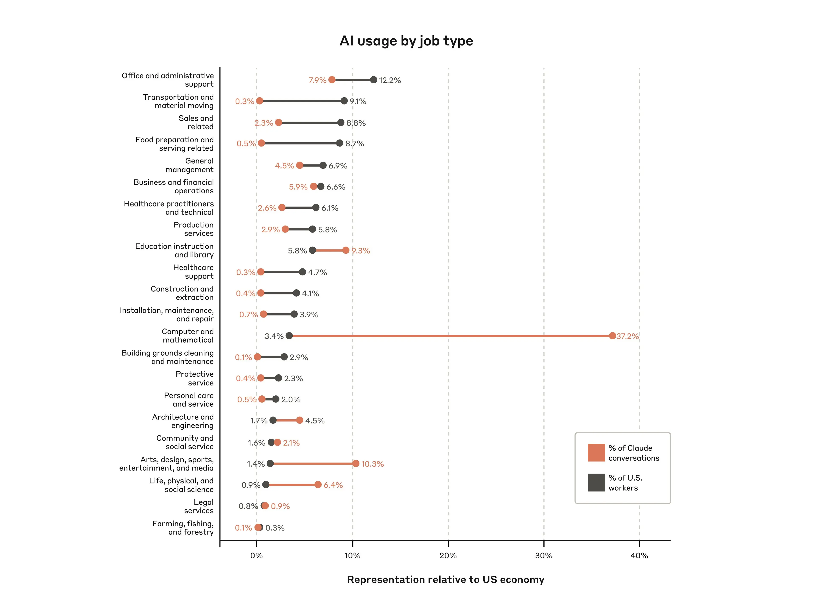
{kind=link}
Coding is the first place AI has found product-market fit. According to Feb 2025 data from Anthropic, coding was almost 40% of Claude conversations, even though coders are less than 4% of U.S. workers:
That was all before winter 2025, Opus 4.6, and long-running agents! Before the job of every coder has changed drastically.
AI spend per employee
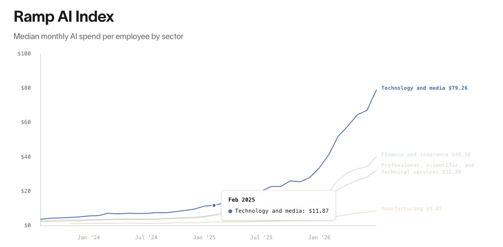
{kind=link}
Monthly spend per employee has 10x’ed in the last 18 months. Coders now write only a small percentage of their code.
As a dumb example, over the course of two days earlier this week, I spent $50 to have my Codex agents make one thousand commits, spend five billion tokens, and write 35,000 lines of code. Just to code some fun side projects.
For perhaps a better example, DHH has coded a new Linux OS, Omarchy. He mostly coded the last update (v4) with AI agents. I’ve estimated the costs below.
The one-person software team
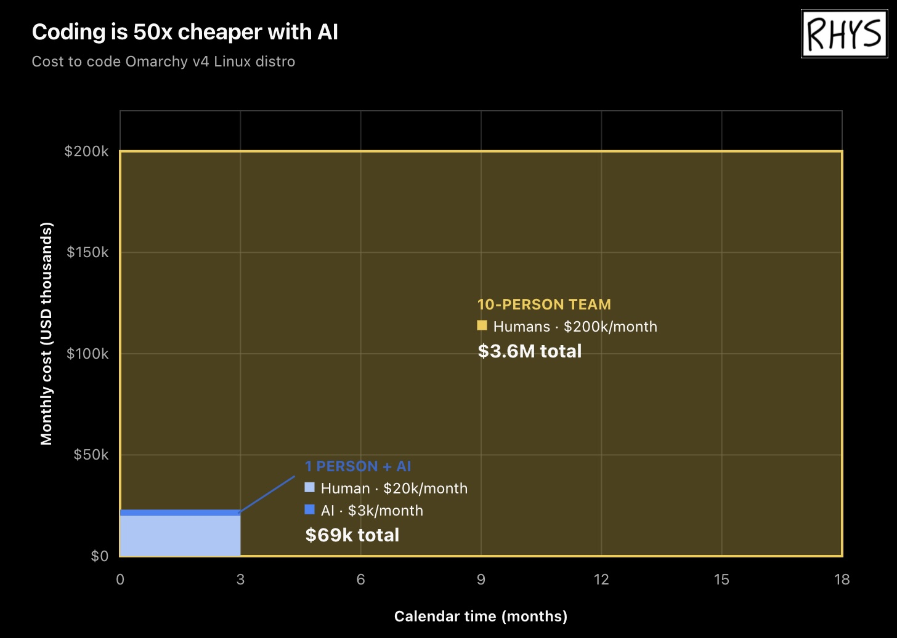
{kind=link}
A 10-person human team would’ve taken 18 months and $3.6M. DHH’s one-person team took 3 months and $69,000, which is 50x cheaper.
Now, not all software projects can be entirely coded by AI. Many of my SF friends work at companies where humans still need to sign off on every PR.
This is the idea of Amdahl’s law and O-Ring models. Productivity in one part of the system is gated by friction in another part.
The software factory
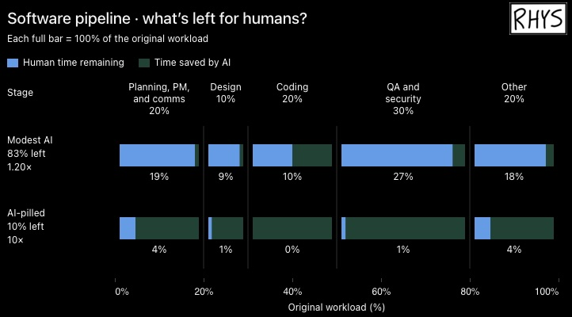
{kind=link}
We can then break down the software factory pipeline into its parts, like they did in this study of 484 developers. There’s planning, design, coding, QA, and other. The chart below shows two categories of companies: modest AI and AI-pilled.
The modest AI company will save 50% of its coding time, but won’t save time in the other parts. This causes only a 20% productivity improvement.
Meanwhile, the AI-pilled company will completely automate design, coding, and security. They’ll spend a bit of time on planning and other. This causes a 10x productivity improvement, not just 1.2x. It’s essentially the DHH Omarchy example above: 1 person + AI instead of 10 people.
Becoming tractor-pilled
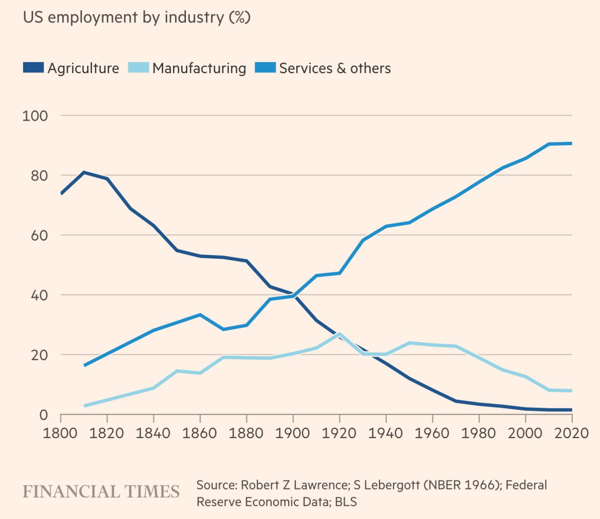
{kind=link}
The AI-pilled scenario is essentially what happened to agriculture. We became tractor-pilled.
But, and stay with me here, coding is not farming.
The biggest difference is that farming used to be ~90% of labor, while coding is currently only about 0.3%. There are 30 million software engineers out of a global population of 8.3 billion.
What will happen to those 30M devs as coding becomes automated? Will they become a lost profession like farming? Or will the market for coding expand so much that we’ll see 100M devs in the future?
Here’s a chart below that roughly estimates the effects.
The market for code, 1980–2025
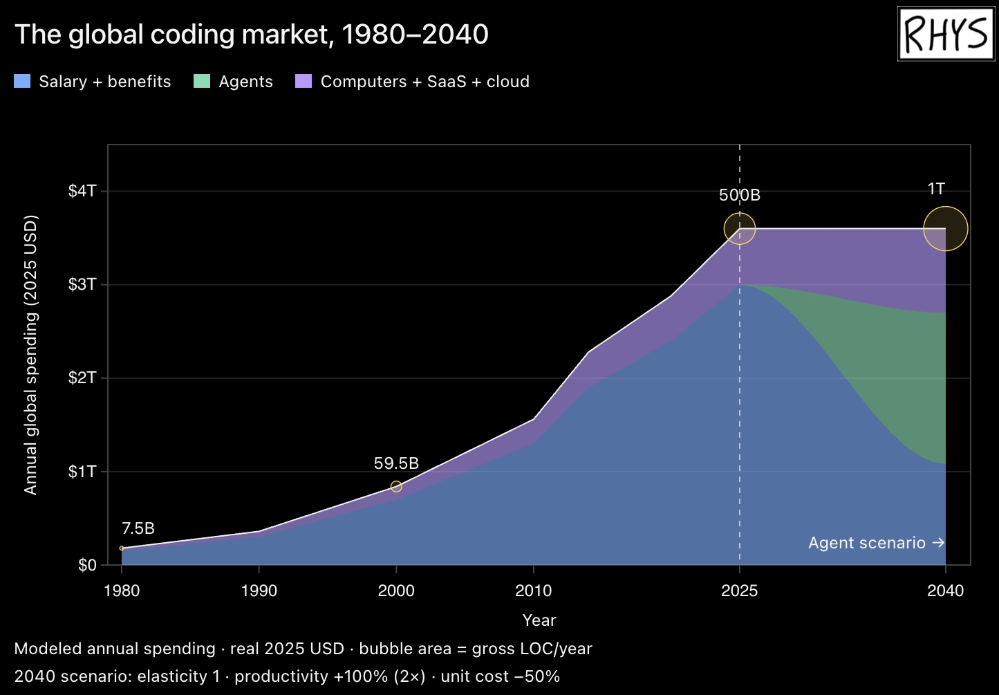
{kind=link}
First, you can see the historical trend from 1980–2025. We’ve gone from spending $300B/yr to $3T/yr. (Roughly $100k for 30M devs.) Although we’ve 10x’ed spend, we’ve over 50x’ed lines of code (LOC) from 7B a year to 500B a year. (Yellow bubbles are LOC.) In other words, we’ve gotten 5x more productive. (And yes, I know, LOC is a terrible metric.)
The trillion-dollar agent opportunity
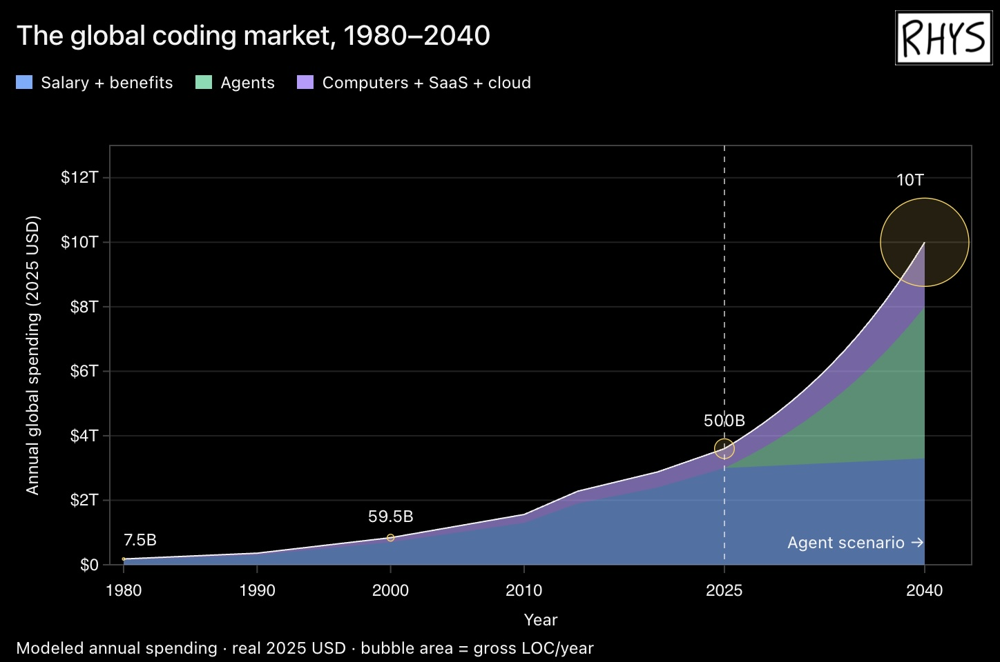
{kind=link}
The right part of this chart shows the 2040 scenario with AI agents. Given the software pipeline above, we can imagine productivity to increase anywhere from 1.2x to 10x. This chart assumes a 2x increase.
We also need to assume a number for demand elasticity. If coding becomes 50% cheaper, will we still want to spend the same amount on coding? In other words, how much code does the world want? This model assumes an ε of 1.
The model shows the results. We’d still spend $3T on code, but we’d spend 50% on agents, and we’d produce 1T LOC a year (2x).
Personally, I think this model is a bit too conservative. I can imagine us spending $10T on code, producing 10T LOC a year, and actually increasing the number of coders. We’ve been on a massive upward trajectory for 40 years already. I don’t see it flattening out.
This is the trillion-dollar AI agent opportunity.
The solar learning curve
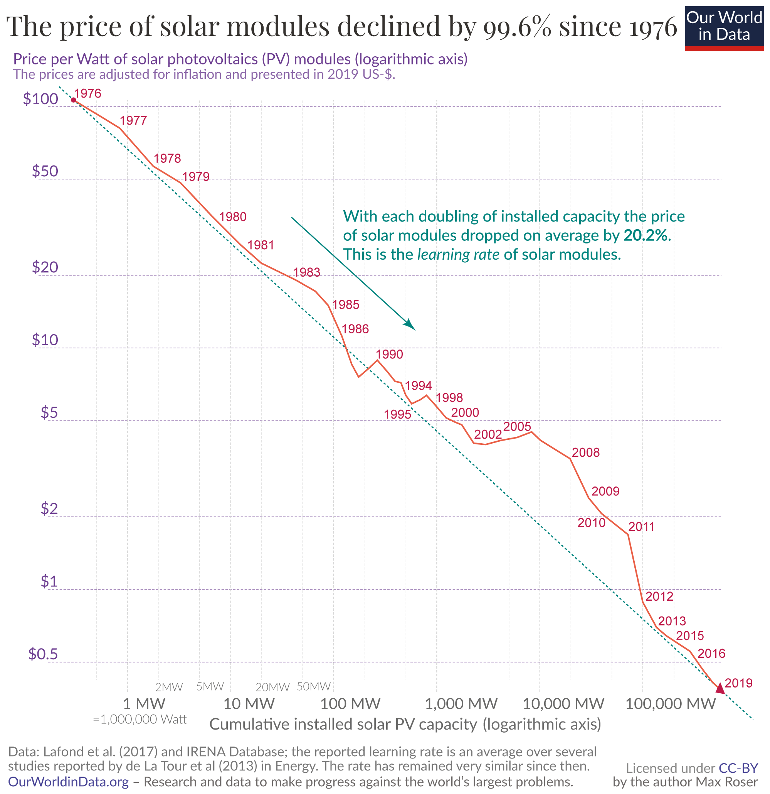
The other way to think about the market for code is by charting it like other Jevons-y experience curves. Here’s the chart for solar. Each doubling of installed capacity decreased the price per watt by 20%.
Cars, solar, and code
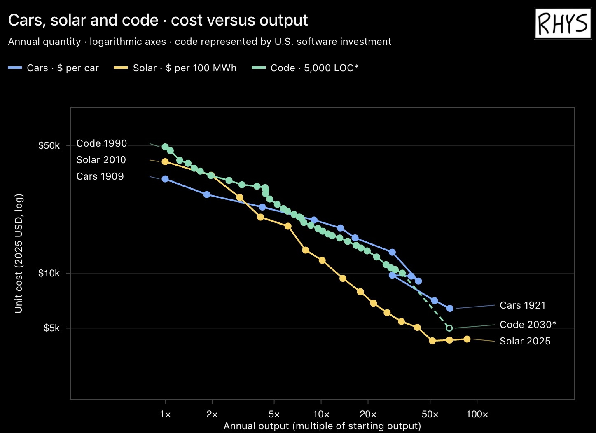
{kind=link}
We can make a similar curve for cars, solar, and code.
Over the course of a decade or two, we increased production 100x and decreased cost 10x.
One weird thing is that we haven’t seen AI in the productivity statistics yet.
Where is the productivity growth?
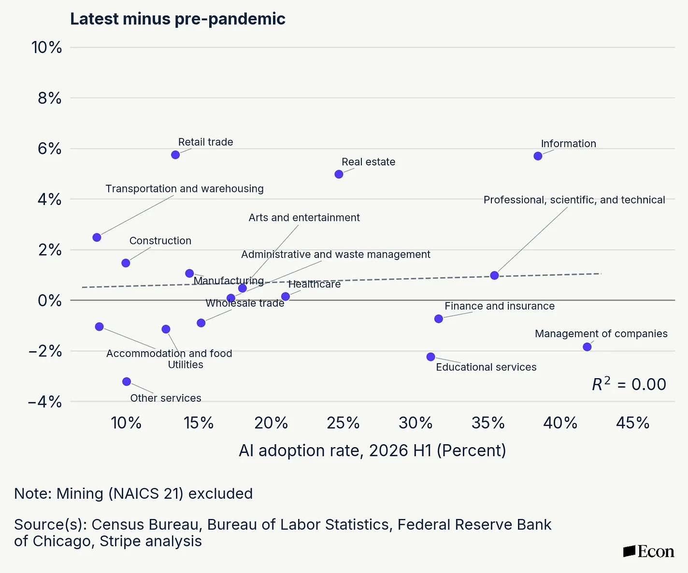
{kind=link}
As the Stripe Econ team shows here, there’s no correlation between productivity growth and AI adoption.
This is the Solow paradox: “you can see the computer age everywhere except in the productivity statistics.”
Technology and total factor productivity
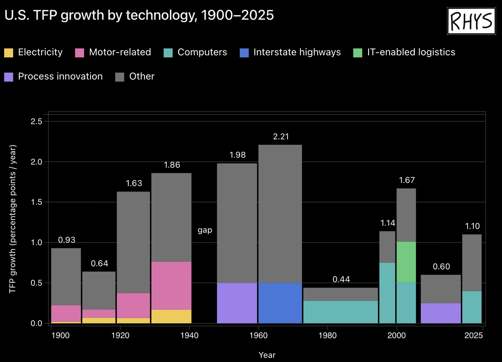
{kind=link}
Since WWII, overall TFP has been roughly constant, if slightly decreasing. Individual technologies have helped along the way:
AI in the productivity statistics
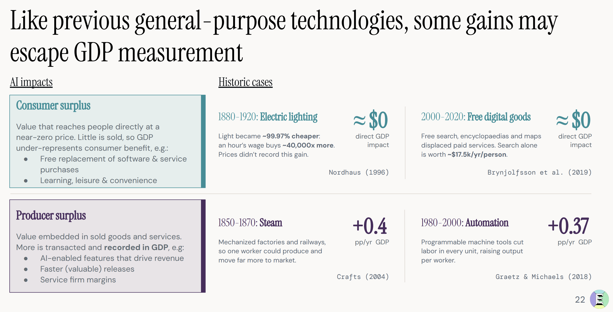
But nothing for AI yet. We’ll see how much of AI productivity is captured in GDP.
White-Collar Labor
What about white-collar labor generally? Can AI automate all cognitive labor?
The white-collar wage pool
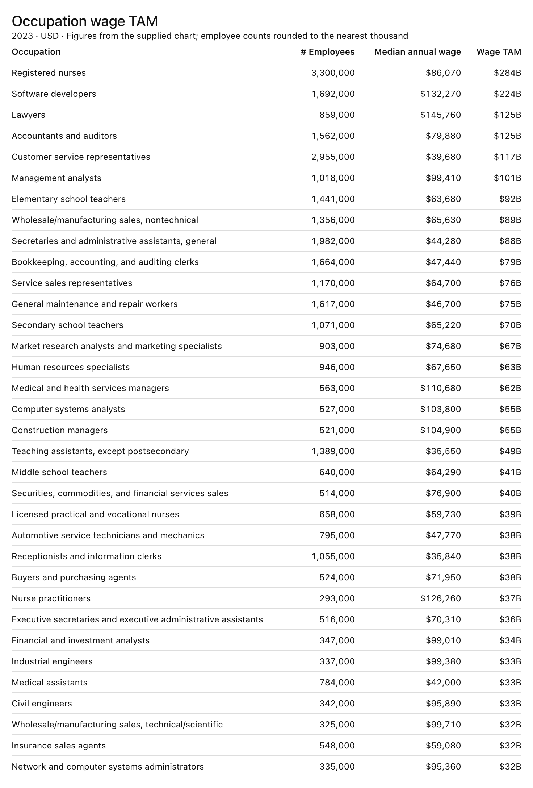
{kind=link}
To think about this, I always come back to a chart I saw from Sequoia’s Konstantine Buhler:
We’ve already looked at software developers. What about AI in the other occupations?
AI beyond software development
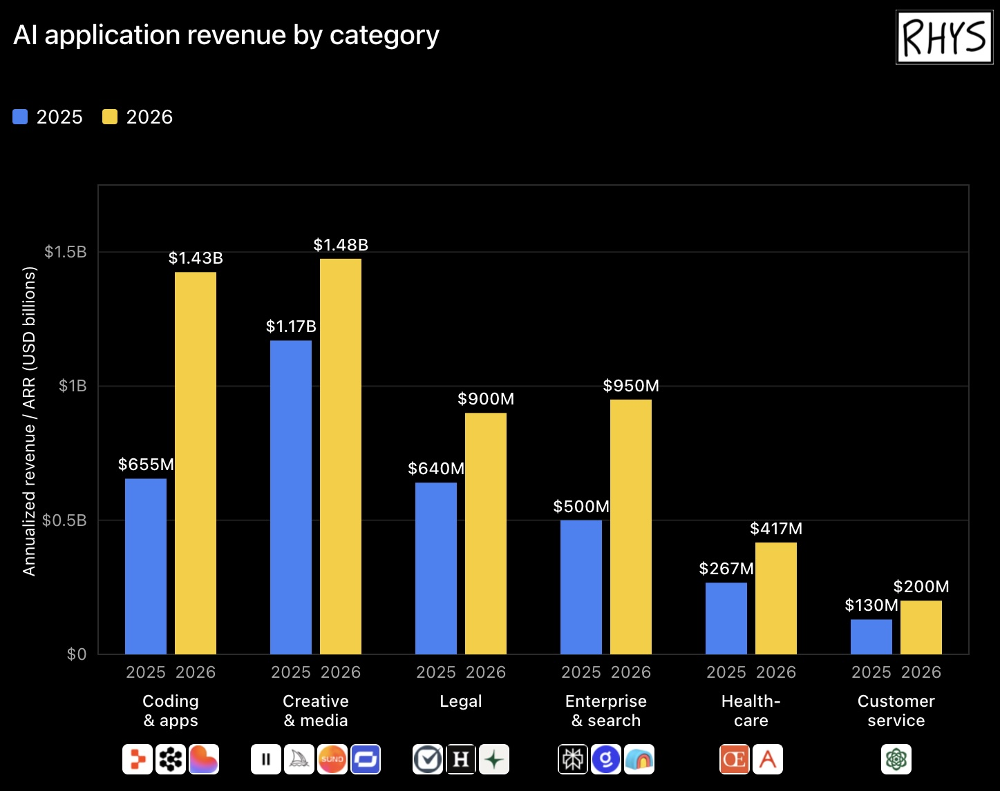
{kind=link}
It’s just getting started. Revenues are still in the ~$1B range, while coding revenues are $10B+. (The coding category below doesn’t include Cursor, Ant, or OAI.)
Importantly, application-layer software is starting to benefit from commoditized intelligence. Harvey just released a post-trained model for legal:
It operates at 25% the cost of foundation models. For apps like Harvey, inference was a massive cost. In the long run, Tenet and similar models should improve their gross margins from 40% to 70%.
From what to why
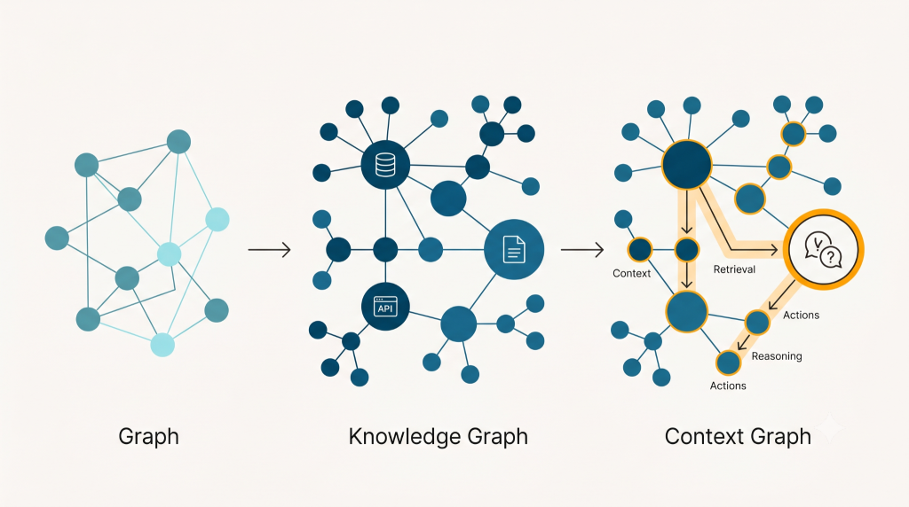
{kind=link}
Let’s talk data for a second. Harvey used legal data in a legal eval gym to train Tenet. Rare data is gold right now. One of the rare enterprise data troves is why they made a decision. These are called context graphs. Instead of data about what a company knows, context graphs trace the why.
Blue-Collar Labor & Robotics
White-collar and blue-collar labor
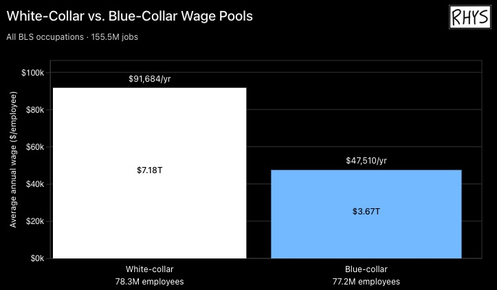
{kind=link}
The blue-collar labor market in America is roughly half the size of the white-collar market.
The blue-collar wage pool
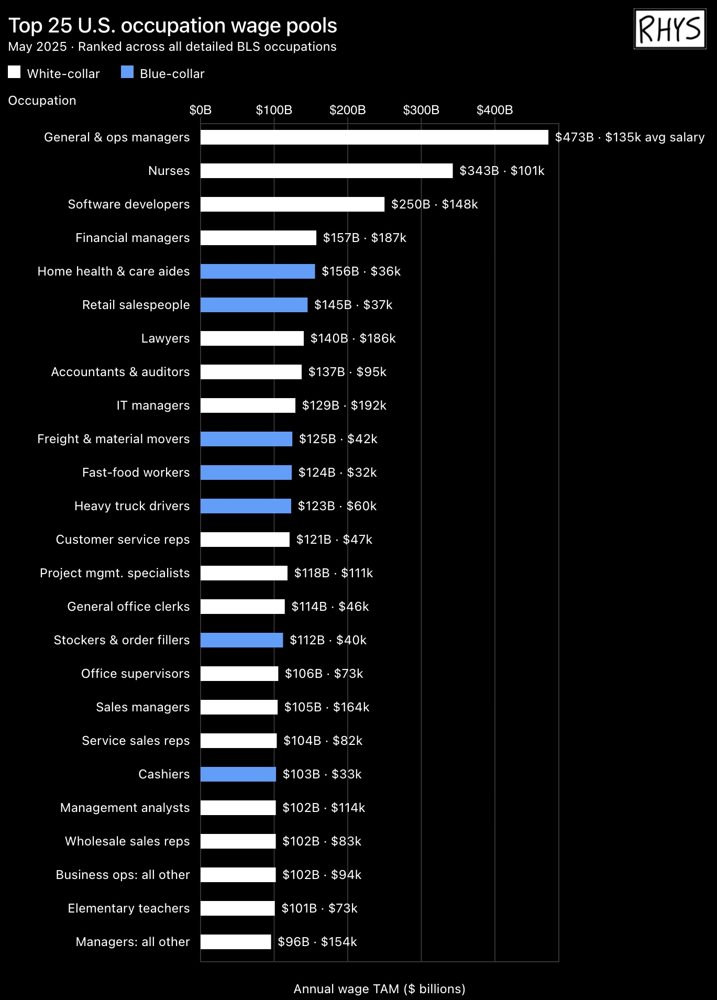
{kind=link}
The top blue-collar jobs by wage pool are care aides, retail salespeople, freight movers, fast-food workers, truck drivers, stockers, and cashiers.
Millions of real miles, billions simulated
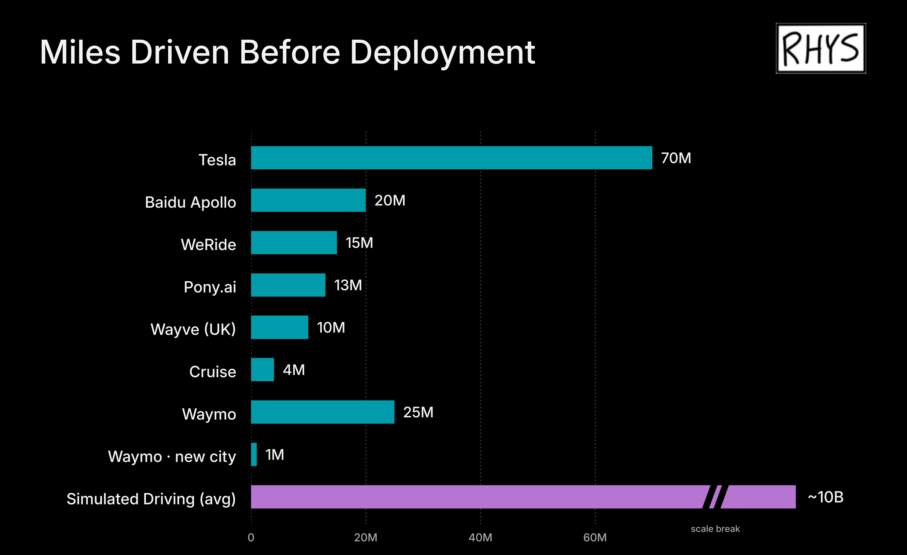
{kind=link}
How? Over the last decade, companies like Waymo got millions of road miles and a billion simulation miles before even hitting the market.
Waymo’s surge
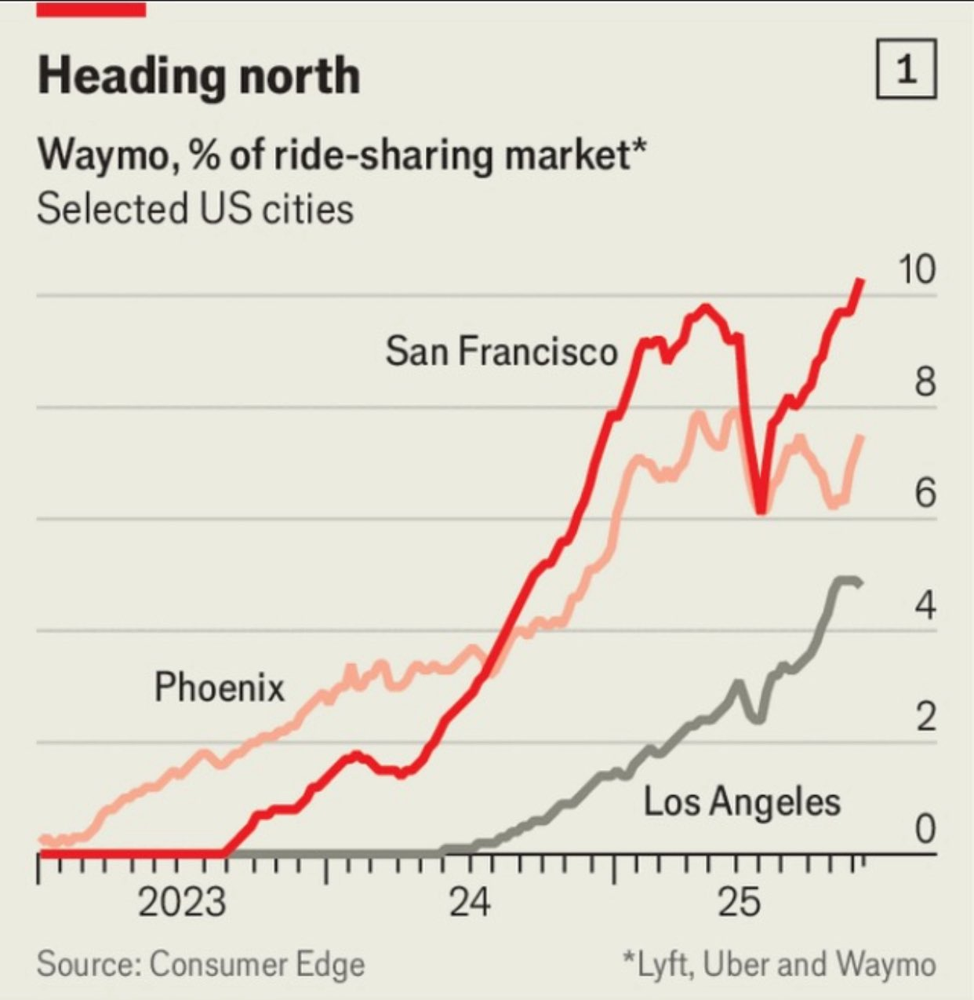
{kind=link}
Waymo has gained market share across each new city:
Right now, Waymo is 25% more expensive. But in the long run, it might be 50% less expensive by removing the human driver, which is half of operating costs.
Trucking is about 5 years behind. There are over 4,000 Waymos in the US, but only 100 driverless trucks. Still feels weird to watch one though:
AVs work because we’ve poured tons of data into them and because cars only work on a small sliver of reality, the road. What about other robotics applications?
Fundamentally, robotics needs an agent acting in a world. The two main approaches to robotics wrap around from either end:
Agent-first. Create a robot foundation model. A robot brain. A set of action policies. Eventually, good brains must develop a good world model.
World-first. Create a world model. A gym for robot brains. Eventually, good world models must develop a good agent model.
Robot foundation models are making a lot of progress. As an example, GEN-1.5 is a one-shot learner. You can show the bot arbitrary new tasks and it will imitate them! This is the GPT-3 moment for robotics.
Zero-shot learning will come soon. Where you don’t need to give any examples, just prompts like we do with ChatGPT. (“Hand me that apple.”)
How are these new foundation models built?
Data for a robot brain
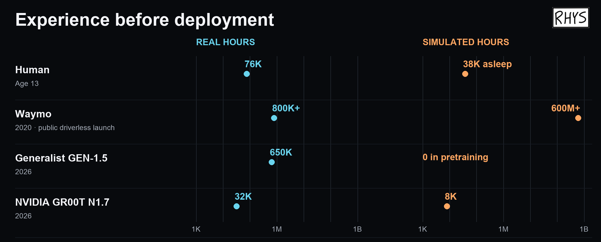
{kind=link}
Part of it is just more data. GEN-1.5 was trained on ~650k hours of human data. (That’s a lot! 650 people each working for 100 days.) It’s roughly 10x more than human children and similar to Waymo’s driving hours.
Interestingly, Gen-1.5 didn’t use any simulation hours, while Waymo spent 600M hours driving in simulation before deployment.
GEN-1.5 has better data too. Instead of teleop data, we use UMI now, a Universal Manipulation Inference. These “robot gloves” give robots much better spatial intelligence.
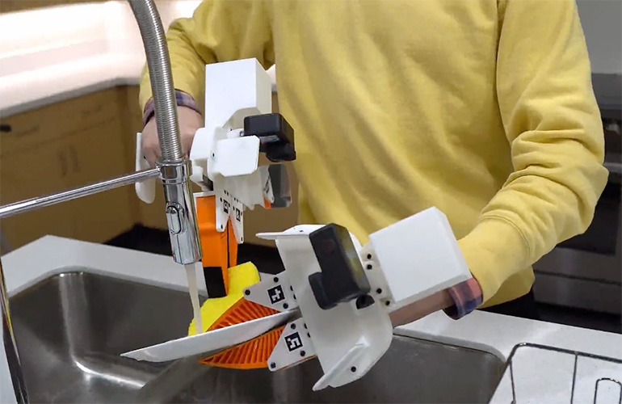
Or as Jim Fan says here, on why UMI is better than teleop:
UMI is essentially a human wearing the robot gripper to collect data directly (human → data). Teleop inserts a layer of separation: human → VR/skeletal device → robot → data, which bleeds out all the human “physical intuition”.
UMI is an excellent way to transfer human physical intuition to robots.
On the other end, world model companies are trying to create experience-as-a-service. Accurate simulation gyms that robots can train in.
Right now these gyms are still pretty expensive and pretty bad. (And there’s not even any good benchmarks.)
Something like Nvidia Cosmos 3 costs $100 per simulation hour. It costs me $1/day for my agents to generate code, about 1000x cheaper.
We’re getting closer though! World Labs just released Atlas, which takes camera position as a native input. They’re able to do sparse reconstructions of arbitrary worlds:
They don’t have dynamics yet, but their Real2Sim2Real pipeline is getting much better. Take a few pictures of your task (real), have it generate a world (sim), do a bunch of training in that world, then close the loop by implementing those policies IRL (real).
Real → Sim → Real
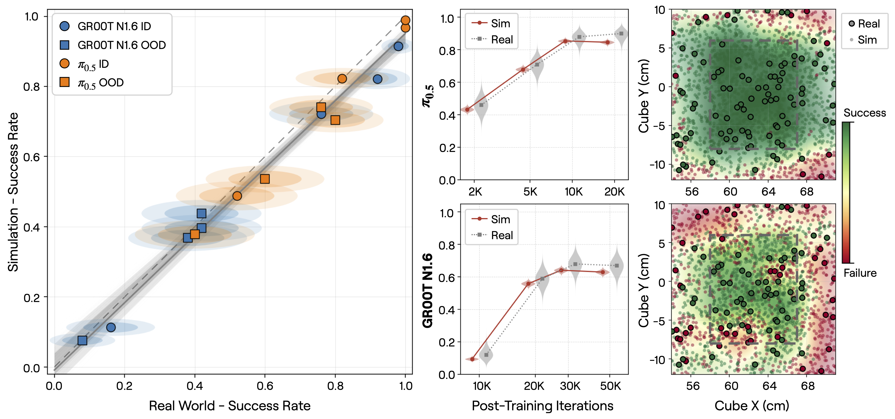
{kind=link}
The simulated world is becoming increasingly correlated with the digital world (correlated success rates below).
The matrix can’t be more than a decade out.